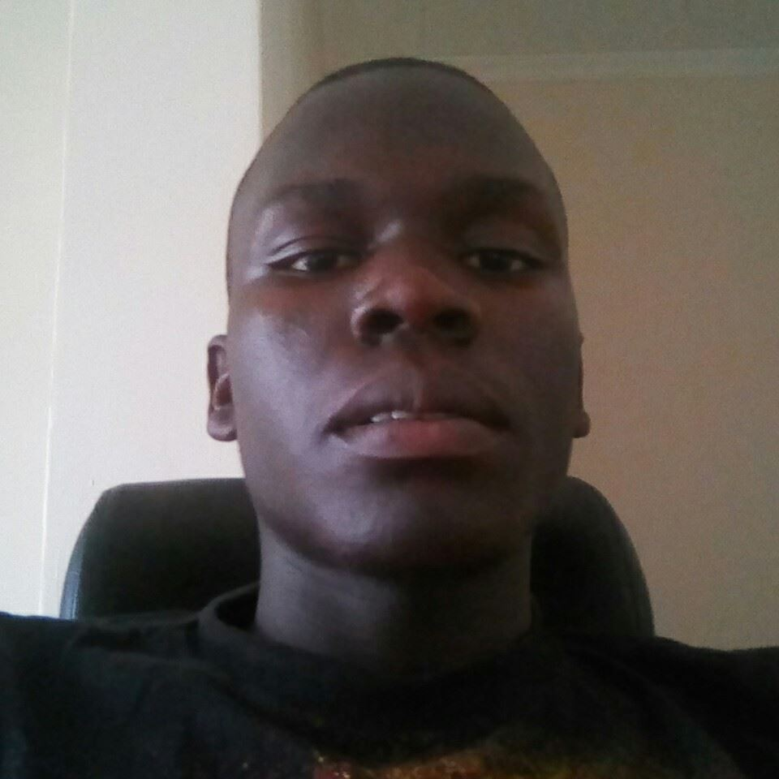

Name:
Rees Alumasa
Gender:
Male
Born:
2nd December 1999
Nationality:
Kenyan

A man of less words but more action
KCPE;
Havuyiya Priamry School Marks:346
=======KCPE;
Havuyiya Primary School Marks:346
>>>>>>> dd0a1b83cfdd4f0d0ab2657766bf969edb3c299cKCSE;
Chavakali High School Grade: B(plain) AGP: 66
Self-Employed
I have had passion in programming since childhood. I had tried makin varous app and websites using templates which mostly required me to pay. So eventually I decided to venture into programming at Moringa school so that I may be able to come up with my own projects and products which may also assist more people in the mordern world. An example of a website i crreated using templates is Rees TV VOD. Other reasons why I took programmming is to raise the living standards of my family through income from products